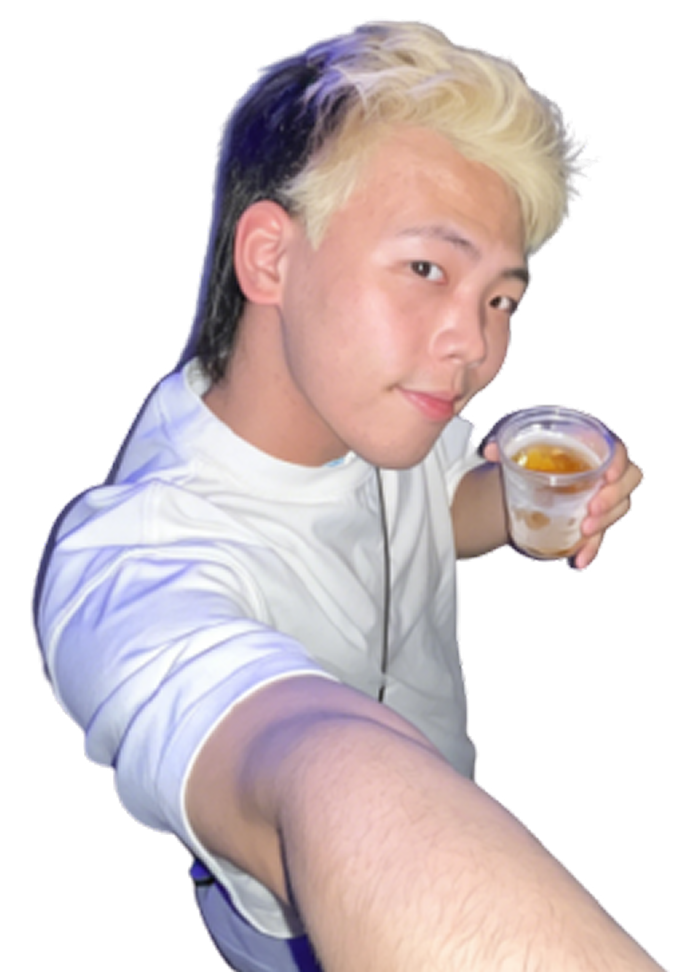

ABOUT ME
我是 陈一鸣ErminG 一名工业设计专业学生，热衷于探索新颖创意与突破常规的思考与表达。
擅长打造兼具思考深度与传播价值的设计项目，能根据不同任务需求与媒介形式灵活调整个人风格。
既能独立高效完成工作，也擅长团队协作，始终保持开放学习的心态，追求专业能力的持续成长。
擅长打造兼具思考深度与传播价值的设计项目，能根据不同任务需求与媒介形式灵活调整个人风格。
既能独立高效完成工作，也擅长团队协作，始终保持开放学习的心态，追求专业能力的持续成长。

HARD
SKILLS
SKILLS
品牌 / 视觉识别设计：标志设计、品牌手册、效果 mockup、社交媒体物料
用户界面 / 用户体验设计：网页与移动端界面设计、交互原型制作
周边产品设计：品牌衍生产品视觉设计，系列化产品设计
电商设计：电商店铺整体视觉规划、详情页设计、电商活动专题页设计
室内设计：室内空间布局规划、家装工装风格方案设计、平面动线规划、
工业设计：产品外观造型设计、产品结构规划、人机工程学分析、设计草图绘制
用户界面 / 用户体验设计：网页与移动端界面设计、交互原型制作
周边产品设计：品牌衍生产品视觉设计，系列化产品设计
电商设计：电商店铺整体视觉规划、详情页设计、电商活动专题页设计
室内设计：室内空间布局规划、家装工装风格方案设计、平面动线规划、
工业设计：产品外观造型设计、产品结构规划、人机工程学分析、设计草图绘制
SOFTWARE
SKILLS
SKILLS